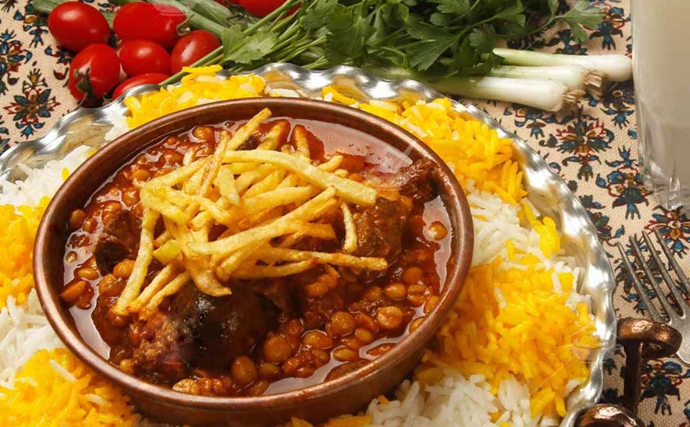

خورش قیمه

خورش قیمه یکی از محبوبترین و خوشمزهترین خورشهای ایرانی است. این خورش اصیل با مواد متنوعی طبخ میشود و در مهمانیها
و مناسبتهای نذری نیز مورد استفاده قرار میگیرد.
مواد لازم:
- لپه: ۲۵۰ گرم
- پیاز متوسط: ۲ عدد
- لیمو عمانی: ۴ عدد
- روغن مایع: به مقدار لازم
- سیبزمینی درشت: ۲ عدد
- گوشت خورشتی: ۴۰۰ گرم
- زعفران دمکرده: ۱ قاشق غذاخوری
- رب گوجهفرنگی: ۳ قاشق غذاخوری
- نمک، فلفل سیاه و زردچوبه: به مقدار لازم
طرز تهیه:
- آمادهسازی لپه:
- لپهها را پاک کرده و دو سه ساعت قبل از پخت، در آب خیس کنید. طی این مدت یکی دو بار آبش را عوض کنید.
- یمو عمانیها را سوراخ کنید و یک ساعت خیس کنید تا تلخی شان گرفته شود.
- تفت دادن گوشت
- پیاز را رنده کرده و در روغن تفت دهید تا سبک شود.
- گوشت را در آب کش قرار داده و رویش آب جوش بریزید تا رنگش تغییر کند
-
افزودن لپه
- گوشت را به قابلمه اضافه کنید و پس از کمی تفت دادن، لپههای خیسانده شده و جوش خورده را اضافه کنید و با دیگر مواد تفت دهید تا گوشت و لپه سرخ شوند.
- افزودن رب
- پس از اینکه رنگ گوشت تغییر کرد، رب گوجهفرنگی را به همراه مقداری فلفل سیاه به دیگر مواد اضافه کنید و تفت دادن را ادامه دهید تا رب گوجهفرنگی سرخ شود.
-
پخت خورش
- چند لیوان آب جوش به قابلمه اضافه کنید و با حرارت ملایم اجازه دهید گوشت و لپه به طور کامل بپزند.
- لیمو عمانیها را به خورش اضافه کنید